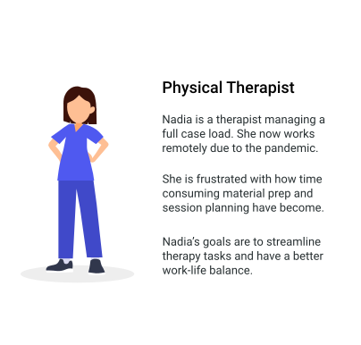
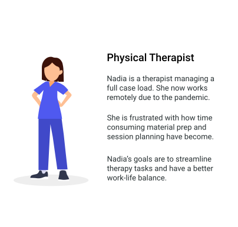

TheraShelf is a cloud storage workspace solution for home health therapists delivering remote rehabilitation services to their patients. Designed in response to the COVID19 outbreak.
Lead UX/UI Designer
Research, Strategy, Design, Branding
There has been an abrupt shift to a remote service model for rehabilitation therapies since the COVID19 outbreak. The lack of physical office spaces creates some headaches for therapists.
TheraShelf streamlines the most important therapy tasks while promoting collaboration with the multi-disciplinary team. TheraShelf's benefits are three fold, positively impacting everyone involved in the therapy process. Let's take a closer look:

A survey was conducted to gain a better understanding of user experiences with cloud storage products on the market. The qualitative data collected about motivations, pain points, etc. would drive design decisions down the road. Important findings include:

Google Docs and Dropbox provide the largest array of features that could be used for therapy tasks. However, none of these features address therapist's needs head on. There is still a considerable amount of effort required by the user to accomplish healthcare goals.
Constant therapy is designed for the therapy population, but it's primary function is to provide therapy materials to the clients. There are no collaboration or content customization features.
Design a product for the new market of remote therapists. Retain current cloud storage users by addressing their pain points as well.
Streamline the most time consuming therapy tasks. Intuitive user flows will improve time management, productivity, and support larger caseloads.
I developed personas to represent different TheraShelf users. The personas were referenced frequently during the design process to maintain true user emapthy.
 

I created user flows to represent how a user would interact with TheraShelf to accomplish the high priority user stories. From there, a site map was created to help organize the destinations for each of the user flows.

Branding elements promote healing, growth, and calmness. This is achieved through a color palette comprised primarily of blue and green tones. Geometric fonts communicate simplicity throughout the product.

I sketched out possible layouts for the product pages based on the user flows. Rapid iterations allowed me to work through some initial design challenges in a quick and efficient manner.
Using my sketches for reference, I created digital wireframes in Figma. The dashboard serves as an anchor point for product navigation. The user flow was designed to mirror an intuitive therapy process, starting with chart review and ending with visit scheduling.

Remote usability testing was completed with several participants to assess the effectiveness of collective design decisions up to this point. Let's take a look at some user feedback.


A high fidelity prototype was created in Figma. I included the visual elements from the branding guidlines and revisions from user testing. Important design changes are highlighted below.
Dashboard elements were reconfigured to better communicate hierarchy of information. A card layout allows direct access to high priority therapy tasks. Adding upcoming sessions improves time management and productivity by eliminating unncessary clicks on other pages.

Important diagnostics are now briefly summarized to save time and improve communication flow between the multi-disciplinary team. Full scale assessments may be accessed under a separate tab at any time.

The entire scheduling process now requires just a few clicks to complete. It streamlines scheduling by allowing therapist to see available time slots for new visits.


TheraShelf underwent some minor and major changes to its design elements and layout. At the end of the day, TheraShelf finds its place amoungst other cloud storage products by targeting a niche health care audience. It provides creative solutions to our new remote world.
Thanks for stopping by! Feel free to check out the clickable prototype